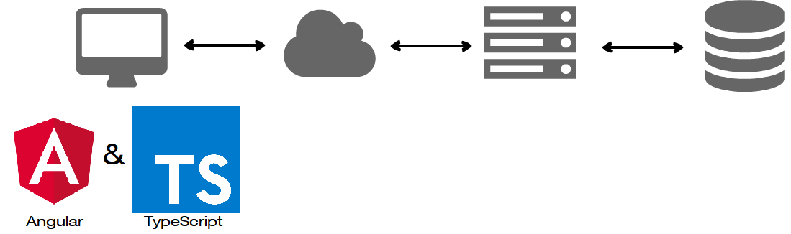
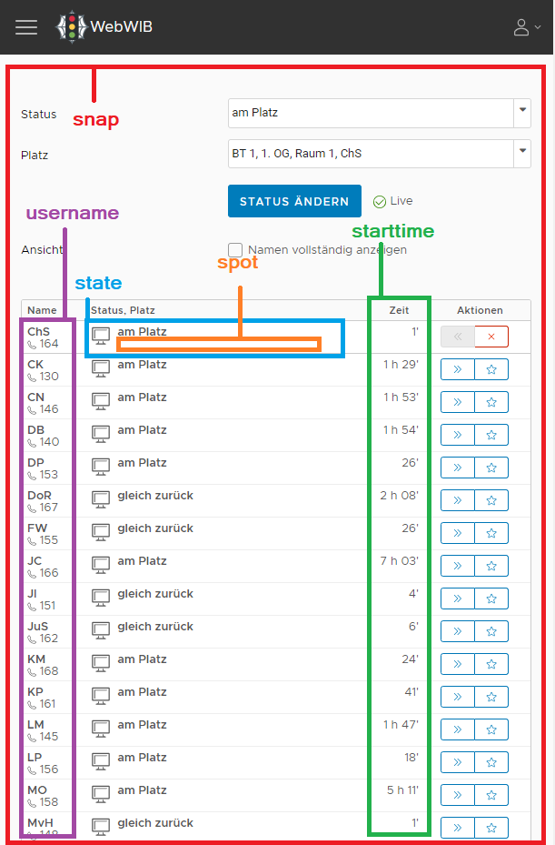
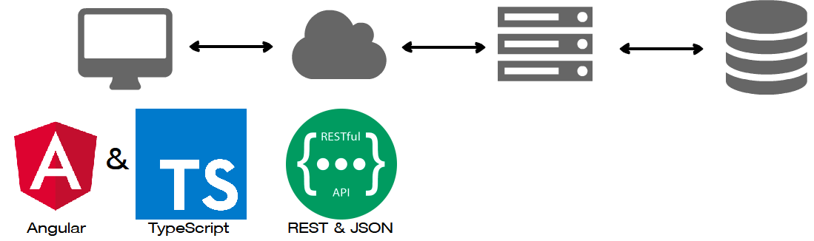
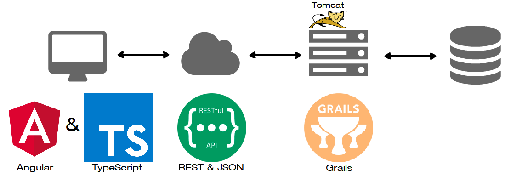

https://www.wordclouds.com/
SO Survey 2018

Zeigt zu der zugehörigen URL die passende Komponente an
Überprüft Zugriffsrecht
Leitet ggf. weiter
const routes: Routes = [{
path: 'admin',
canActivate: [CanActivateViaAuthGuard],
children: [
{path: '', redirectTo: 'users', pathMatch: 'full'}, // empty path
{path: 'users', component: ViewUserComponent},
{path: 'users/edit/:id', component: EditUserComponent, resolve: {user: PersistUserResolverService}},
{ path: '**', component: PageNotFoundComponent }
]
...

Bestandteile:
| Richtung | Syntax | Typ |
| ts->html | {{user.name}}, [disabled]="isDisabled" | Einfügen, Attribut, Class, Style |
| html->ts | (click)="sendForm()" | Event |
| html<>ts | [(ngModel)]="user" | Two-Way |
Lade...
class NewUserComponent implements OnInit {
user: User;
groups: Group[];
spots: Spot[];
constructor(private userService: UserService,
private groupService: GroupService,
private spotService: SpotService
) {}
ngOnInit(): void {
this.groupService.get().subscribe(groups => this.groups = groups);
this.spotService.get().subscribe(spots => this.spots = spots);
}
saveUser(): void {
this.userService.addUser(this.user);
}
}
DI: Entwurfsmuster: reglementiert die Abhängigkeiten eines Objekts zur Laufzeit
DI überträgt Verantwortung für das Erzeugen und die Verknüpfung von Objekten an eine eigenständige Komponente
--> https://angular.io/guide/architecture
Services & Dependency Injection


URL Mapping
Controller
Domain
GORM